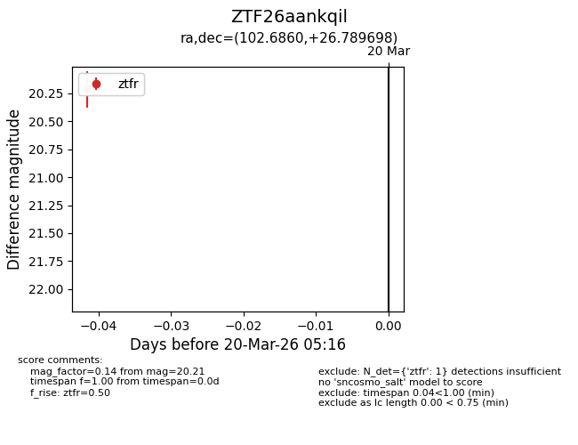
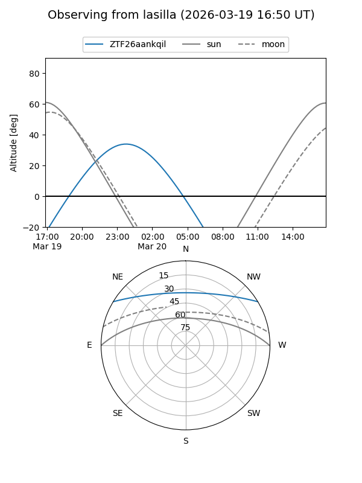
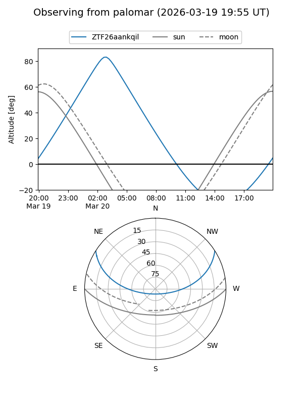

ZTF26aankqil
Target ZTF26aankqil at 2026-03-20 05:18
Aliases and brokers:
FINK: link
Lasair: link
ALeRCE: link
alt names
ZTF26aankqil (ztf,fink_ztf)
Coordinates:
equatorial (ra, dec) = 102.6860,+26.78970
equatorial (HMS+DMS) = 06:50:44.63,+26:47:22.91
galactic (l, b) = (188.6686,+11.71911)
Flags:
Photometry:
last ztfr=20.21
1 ztfr detections
Lightcurve

Visibility


Additional plots